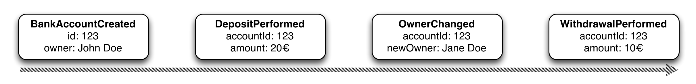
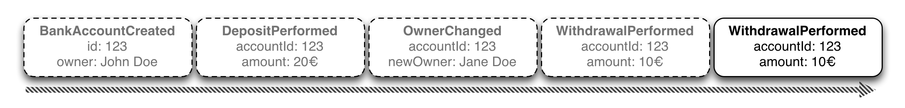
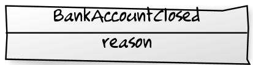

Event Sourcing
in practice
Who we are

Image © 2013 Vaamo Finanz AG. All rights reserved.
Structure
- The Object-Relational mismatch
- How does Event Sourcing work?
- Considering Event Sourcing
- (How we do ES)
- (Pitfalls we encountered)
- Cool projects to watch
Getting to know you
Would you agree?
- Our domain is mostly just CRUD operations
- Our business objects map neatly to our DB Tables
- We use Hibernate (or another ORM) for O-R Mapping
- We have a sh*tload of services, mutating business objects
- We do Domain-Driven Design
Mapping O to R is suprisingly hard
- 143 pages on mapping O to R
- Recommends using ORM-Tools only for CRUD-heavy applications
- Why?
The Object-Relational mismatch

What is Event Sourcing?
- An alternate way to save data
- Mapping of objects to a stream of events, not to tables
- Thus bypasses the Object-Relational Impedence Mismatch
What is an event
- Something that happend in the past.
- E.G.

Saving objects
- Create an Event for every state change of the object:

- Save this stream of events somewhere, preserving their order
Restoring objects
Subsequently apply the events from the respective EventStream to a fresh object instance
Updating Objects
var account = accountRepository.get(123)
var modifiedAccount = account.withdraw(new Euro(10))
accountRepository.save(modifiedAccount)
What should be persisted?

Deleting Objects
How do you delete an object?

Retroactive Event. An event undoing something that happened in the past
Event Sourcing vs Command Sourcing
Considering Event Sourcing
Pros and Cons of Event/Command Sourcing
Pros
- Bypass the O-R Impedence Mismatch
- Easy undo mechanism
- Debuggability and accountability
- After-the-fact mining of Event Streams
Cons
- Awkward to query Domain Model (solved by CQRS)
- Takes a bit of getting used to
- Much less framework/community/vendor support
Debugging and accountability
- Every change to state is traceable
- You know how the system got into the current state
- Metadata like "who did that" and "when did it happen"
Retrospective mining of Event Streams
- Collection of previously uncollected metrics and infos is possible
- E.G. A recommendation engine that recommends customers items, they removed from their shopping card
Should I be doing Event Sourcing?
Event Sourcing is probably a good fit when you are:
- experienced in Domain-Driven Design
- building a system doing more than simple CRUD
- the accountability/debuggability is critical
- deriving a competitive edge from the data
- building a scaleable system based on CQRS princples
Thank you for your kind attention
Sources and further reading
Event Sourcing theory
Event sourcing implementation
Sources and further reading
Command-Query Responsibility Segregation (CQRS)
←
→
/
#